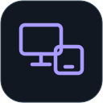
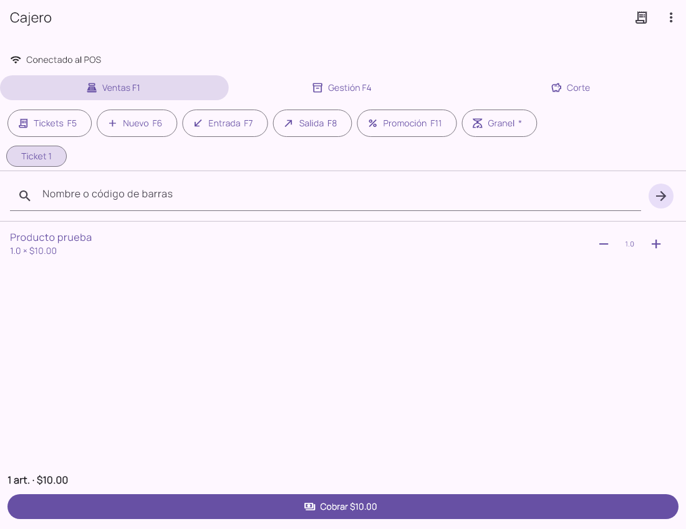

Atiende en paralelo
Distribuye a los clientes entre la caja principal y las terminales autorizadas.

Windows y Android
Tenkai MultiPos
Agrega una terminal para atender a más clientes. Cada cajero trabaja con su sesión, mientras el POS principal concentra catálogo, cobros, inventario y resultados.
Las funciones de contingencia, folios y recuperación requieren versiones compatibles en ambas aplicaciones. Consulta el paquete recomendado para tu tienda.
Hecho para resolver tu trabajo
Distribuye a los clientes entre la caja principal y las terminales autorizadas.
Los productos y precios de la tienda vienen del POS principal.
Cada caja mantiene su operación y sus comprobantes para revisar el trabajo.
Una instalación compatible conserva operaciones pendientes y reconecta con la principal.
La aplicación en detalle
Funciones según los módulos, permisos y versiones compatibles de tu instalación.
Búsqueda y escaneo, tickets, cobro y comprobantes de la terminal.
Efectivo, tarjeta y combinados; presentaciones configuradas en el POS compatible.
Disponibles conforme a los permisos y funciones de la instalación; el POS valida la operación.
La venta guardada conserva su identidad al reenviarse; una respuesta perdida no debe originar otro cobro.
Con preparación y autorización vigentes, puede continuar hasta 30 minutos desde la última renovación.
Arqueo y cierre; si hay operaciones pendientes, primero deben confirmarse al recuperar conexión.
Dentro de Tenkai MultiPos
Ventas, gestión y corte de la terminal adicional.
 Ampliar pantalla
Ampliar pantallaLa caja solicita autorización al POS principal.

Ampliar pantallaEl cajero trabaja con una sesión y un ticket propios.
Pantallas de las aplicaciones con datos de demostración. La apariencia y las opciones pueden variar según versión, edición y permisos.
Antes de comenzar
POS principal abierto, módulo MultiCaja y cupo autorizado, dispositivo compatible y la misma red de la tienda. Prepara el catálogo y la sesión antes de depender de la contingencia.
Empecemos por tu negocio
Cuéntanos cómo trabajas. Te ayudamos a elegir las aplicaciones y módulos que necesitas.